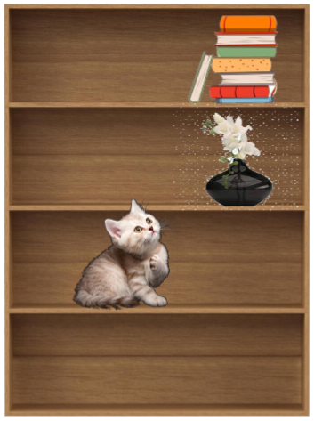
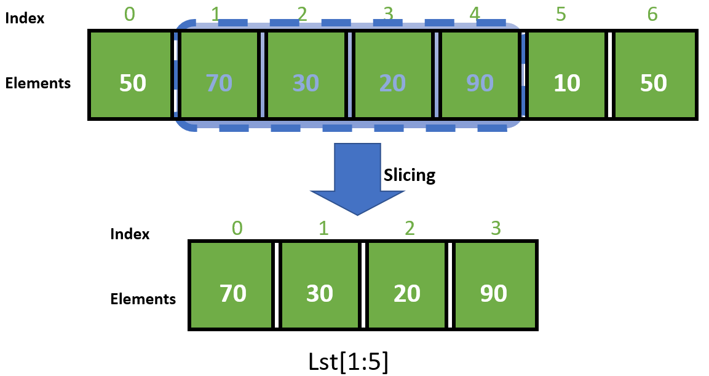

Return STEM;
Introduction to Python
What are lists?
Why Use Lists?
List Syntax
Indices
Getting and Setting Elements
Iterating through lists
List Methods & Operations
Tuples
List Input and Output
Multidimensional Lists
List Methods
Vocabulary
Lists
This guide is still under development. We'll be overhauling the Introduction to Python content in the next few months. Stay tuned for more changes and better tutorials!
~ The Return STEM team
What are lists?

Lists are an ordered collection of items. Each individual item inside the list is called an element
These items can be:
- Integers/floats/booleans
- Strings
- Other data types
If variables are boxes, a list would be a shelf which you place the boxes on.
Why Use Lists?
Lists offer a useful way to organize data where there is a variable number of entries and perform the same task on a lot of grouped data.
For example, let’s say that I have a couple of lists to represent some information about a student at a school.
name = "John"
grade = 8
scores = [98.0, 93.0, 87.5, 100.0]
attendance = [True, False, True, True, True]
It becomes much easier to find John’s average score, or find how many days he has missed class.
List Syntax
Lists are declared like variables, but use square brackets [] around everything within them:
list1 = ["cat", "dog", "cow"]
# assigns the strings cat, dog, and cow to list1.
Each separate item inside the list is separated by commas. Here's a list containing integers from 0 to 9:
nums = [0, 1, 2, 3, 4, 5, 6, 7, 8, 9]
Indices
Each item in the list has an index that describes its position in the list. This is similar to someone's position in line--if you're first in line, you are at the front of the line.
However, in programming, the first element in the list has the index 0.
This is called zero-indexing, where zero is the first value of a sequence of numbers (count starting from zero)
my_list = ['a', 'b', 'c', 'd']
# ^ ^ ^ ^
# 0 1 2 3
Negative indices
Positive indices reference elements from left to right.
Negative indices start from the opposite side, from right to left.
my_list = ['a', 'b', 'c', 'd']
# ^ ^ ^ ^
# -4 -3 -2 -1
-1 is the last element of the list
-3 is the third to last element of the list
Getting and Setting Elements
To retrieve a single list element, use the list name followed by the element's index in square brackets. For example, my_list[1] returns 'b' because 'b' is the second (index 1) element in the list.
x = list[0]sets variablexto'a',the first element (index 0) in the list
You can also set individual elements as well using this technique
my_list[2] = 'y'sets the third element (index 2) to'y'my_listnow has the value['a', 'b', 'y', 'd']
my_list = ['a', 'b', 'c', 'd']
# ^ ^ ^ ^
# 0 1 2 3
List Slicing
Just like in strings, lists can also be sliced. Slicing effectively creates a new list using a part of the original list.
- It does not mutate the original list

The syntax looks like this:
list_name[start:end] where start and end are both indices
lst = [50, 70, 30, 20, 90, 10, 50]
print(lst[1:5])
>>> [70, 30, 20, 90]
Remember that
startis inclusive, butendis exclusive.Omitting
endlikelist_name[start:]will make the code slice till the end of the listMeanwhile, omitting
start, likelist_name[:end]will make the code slice from the beginning
Indices Practice
nums = [1, 1, 2, 3, 5, 8, 13, 21, 34, 55]
animals = ['cat', 'dog', 'cow', 'sheep', 'pig']
fruits = ['apple', 'banana', 'lemon', 'tomato']
Using the declarations above, evaluate:
nums[1]animals[4]fruits[-2]nums[-1]fruits[3]nums[1:5]animals[0:2]fruits[1:]nums[:5]
len()
To get the length of a list, you can use len().
my_list = ['a', 'b', 'c', 'd']
print(len(my_list))
>>> 4
This also works for strings:
my_str = "Hello World"
print(len(my_str))
>>> 11
Debug-printing lists
Lists can be directly printed out like this:
my_list = ['a', 'b', 'c', 'd']
print(my_list)
>>> ['a', 'b', 'c', 'd']
However, this might not be the best way you would like to present your information, since the format cannot be changed.
We call this debug logging, since this would not be used in a real application; it's only for us to see what's going on in our code.
One way to print out lists in a better way is to iterate through each element and print them out individually.
Iterating through lists
Iterating through lists can be useful to perform the same operation on every element of the list (such as print(), but could also be mathematical functions, checking for a condition, etc.)
You already know how to use for loops to go through a series of numbers, so you could do the following to iterate (go through all the elements) through a list:
my_list = ["orange", "apple", "pear", "banana", "kiwi"]
for i in range(0, len(my_list)):
print(my_list[i])
>>> orange
>>> apple
>>> pear
>>> banana
>>> kiwi
for loop short syntax
There’s a shortcut for the code presented in the last slide:
my_list = ["orange", "apple", "pear", "banana", "kiwi"]
for i in my_list:
print(i)
>>> orange
>>> apple
>>> pear
>>> banana
>>> kiwi
In the previous method, you were cycling through numbers, and using numbers to reference elements in the list. Now you are directly cycling through the elements of the list without having to worry about indices.
You cannot use this type of loop to change the values inside a list.
List Methods & Operations
.pop()
To delete a single element from a list, you can use the .pop() function. For example, letters.pop(2) deletes the item at the second index (3rd element).
- Notice that this shifts all indexes after the deleted item:
- Before:
letters[0] = "a", letters[1] = "b", letters[2] = "c", letters[3] = "d" - After:
letters[0] = "a", letters[1] = "b", letters[2] = "d"
letters = ["a", "b", "c", "d"]
letters.pop(2)
print(letters)
Output:
['a', 'b', 'd']
.append()
To add an element to the end of the list, you can use .append()Just like .pop(), use it after the name of the list, with the value you want to append.
For example, to append 'e' to the end of the list letters, you can use letters.append(‘e’)
letters = ['a', 'b', 'c', 'd']
letters.append('e')
print(letters)
>>> ['a', 'b', 'c', 'd', 'e']
List Operators: * and +
Similar to strings, + and * can be used on lists
+ concatenates two lists together
* repeats a list multiple times
word = ['racecar']
print(word * 4)
>>>['racecar', 'racecar', 'racecar', 'racecar']
print(['racecar', 'bus'] + ['train'])
>>>['racecar', 'bus', 'train']
print([1, 2, 3] + [4, 5, 6])
>>>[1, 2, 3, 4, 5, 6]
# Notice that the values are not added together, instead the lists are.
in
- While
inis a keyword when writingforloops, you can also use it to check whether an element is present in the listinreturnsTrueif the value is in the list/string andFalseif the value is not
my_list = ['a', 'b', 'c', 'd']
print('a' in my_list)
>>>True
This also works for strings:
my_str = "Hello World"
print('o' in "Hello World")
>>>True
Tuples
While you explore more libraries, you will find that many functions return a special data type called a tuple. Tuples are declared like lists, but use () instead of [].
These data types behave like lists, but are immutable* (cannot be changed). Therfore, you cannot reassign values in a tuple, and the size of a tuple cannot change.
Reference a tuple's elements just like you would in a list:
my_tuple = (0, "apple", 2)
print(my_tuple[1])
>>> apple
Keywords like in and functions like len() can also be used on tuples
animals = ("pig", "cow", "sheep")
print("cow" in animals)
>>> True
You can use list() to convert a tuple to a list
animals = ("pig", "cow", "sheep")
print(animals)
print(list(animals))
>>> ('cow', 'pig', 'sheep')
>>> ['cow', 'pig', 'sheep']
List Input and Output
Inputting into lists
On one line
You cannot directly input lists with input(), since python believes that it is a string:
my_input = input("Enter input: ")
print(type(my_input))
Enter input: [1, 2, 3]
<class 'str'>
Instead, you can have the user input each element of the list with a space in between, using the .split() method on input().
my_input = input("Enter input: ").split()
print(type(my_input))
print(my_input)
>>> Enter input: 1 2 3
>>> <class 'list'>
>>> ['1', '2', '3']
If you put nothing in .split(), it will split the string by spaces. However, you can choose to include a string inside of .split() to tell it what to split by.
Multiline Input
Another method of inputting values into a list could be on multiple lines, using input() many times with a loop.
In this method, we can use a loop, after getting how many elements will be inputted.
reps = input("How many inputs? ")
my_list = []
for i in range(reps):
ele = input()
my_list.append(ele)
print(my_list)
>>> How many inputs? 3
>>> 1
>>> 2
>>> 3
>>> ['1', '2', '3']
Casting an entire list
Notice that when you used input().split() to get inputs into a list from the user, everything was a string.
However, you can't use int() on input() like earlier, since int() cannot cast spaces and other formatting.
One way to do this is to iterate through each element, and change their type one by one.
vals = ["1", "2", "4", "3"]
print(vals)
for v in range(len(vals)):
vals[v] = int(vals[v])
print(vals)
>>> ['1', '2', '4', '3']
>>> [1, 2, 4, 3]
Outputting a list
When using print() on a list, you'll notice that it prints it with brackets and commas.
If you don't want that, you can do
string.join(list_name)
string is what should be in between the printed elements, usually ' ' for our purposes:
words = ["quickly", "scurry", "and", "find", "freedom"]
sentence = ' '.join(words)
print(sentence)
other_sentence = ', '.join(words)
print(other_sentence)
>>> quickly scurry and find freedom
>>> quickly, scurry, and, find, freedom
Multidimensional Lists
Lists can also have multiple dimensions (2D, 3D, 4D). You can do this by putting lists inside of lists, like this:
[["r1c1", "r1c2"], ["r2c1", "r2c2"]]
| Element 0 | Element 1 | |
|---|---|---|
| List 0 | "r1c1" | "r1c2" |
| List 1 | "r2c1" | "r2c2" |
This list has two lists inside of it that are two elements long (it is "2 by 2"). It behaves like a 2-dimensional table, with rows and columns.
Elements can be addressed by indexing twice (my_list[row][col])
Multidimensional lists can be used to model many real-world things. Tables and graphs are all 2-dimensional data that can be modeled with multidimensional lists
You can also make 3, 4, and 5 dimensional lists (and so on) Put list inside of lists inside of lists until you haveachieved the number of desired dimensions
Example
You can represent a seating chart through a multidimensional list:
seating_chart = [
["Nobody", "Tim", "Sally", "Ben"],
["Arnav", "Jason", "Mary", "Rav"],
["Aditya", "Nobody", "Samantha", "Lee"]
["Joshua", "Tyrone", "Adam", "Aarav"]
["Ethan", "Lilly", "Daryl", "Danny"]
]
# Print the person sitting in the first row and first column
print(seating_chart[0][0])
>>> Nobody
# Print the person sitting in the third row and fourth column
print(seating_chart[2][3]
>>> Lee
Iterating through multidimensional lists
You can iteratively print values of a list:
for i in range(len(list)): print(i)
However, if you did this using a multidimensional list, it would print simply the lists inside, rather than each individual value
two_d_list = [[1,2,3],[4,5,6],[7,8,9]]
for i in range(len(two_d_list)):
print(two_d_list[i])
>>> [1,2,3]
>>> [4,5,6]
>>> [7,8,9]
We can solve this with nested loops. A nested loop can iterate through multidimensional lists. The list [1,2,3] inside two_d_list is actually two_d_list[0]. Similarly, [4,5,6] is two_d_list[1] and [7,8,9] is two_d_list[2]
An outer loop will retrieve the lists inside the combined list An inner loop will retrieve the values inside the inner lists
The inner loop will iterate through two_d_list[i], or every list that is inside the combined list
two_d_list = [[1,2,3],[4,5,6],[7,8,9]]
for i in range(len(two_d_list)):
for j in range(len(two_d_list[i])):
# New - prints on the same line
print(two_d_list[i][j], end = “ ”)
# Have we reached the last element?
# Then prints a new line
if j == len(two_d_list[i])-1:
print(“”)
>>> 1 2 3
>>> 4 5 6
>>> 7 8 9
Trace Table
| Iteration | Value of loop variables | Value printed |
|---|---|---|
| 1 | i = 0, j = 0 | 1 |
| 1 | i = 0, j = 1 | 2 |
| 1 | i = 0, j = 2 | 3 |
| 2 | i = 1, j = 0 | 4 |
| 2 | i = 1, j = 1 | 5 |
| 2 | i = 1, j = 2 | 6 |
| :-: | :-: | :-: |
| 3 | i = 2, j = 0 | 7 |
| 3 | i = 2, j = 1 | 8 |
| 3 | i = 2, j = 2 | 9 |
List Methods
| Function | Usage | Example |
|---|---|---|
| len() | Returns the length of the list | len([0, 1, 2]) returns 3 |
| max() | Returns the largest value of the list | max([1, 9, 3]) returns 9 |
| min() | Returns the smallest value of the list | min([1, 9, 3]) returns 1 |
| .pop() | Removes the element at the specified index, then returns it | [1, 2, 3].pop(1) returns 2 and changes list to [1, 3] |
| .append() | Adds the element to the end of the list | [1, 2, 3].append(4) changes list to [1, 2, 3, 4] |
| .sort() | Sorts the list from least to greatest | [5, 6, 2].sort() changes list to [2, 5, 6] |
Vocabulary
| Word | Definition |
|---|---|
| List | An organized and mutable (changeable) sequence of items |
| Tuple | An organized but immutable (unchangeable) sequence of items |
| Element | The items inside of a list (like each shelf in a bookshelf) |
| Index | The position of an element inside of a list |
| Slicing | The process of creating a list by taking a part of one that already exists |
| Mutable/Immutable | An object that can be changed / cannot be changed. Lists are mutable, tuples are immutable. |